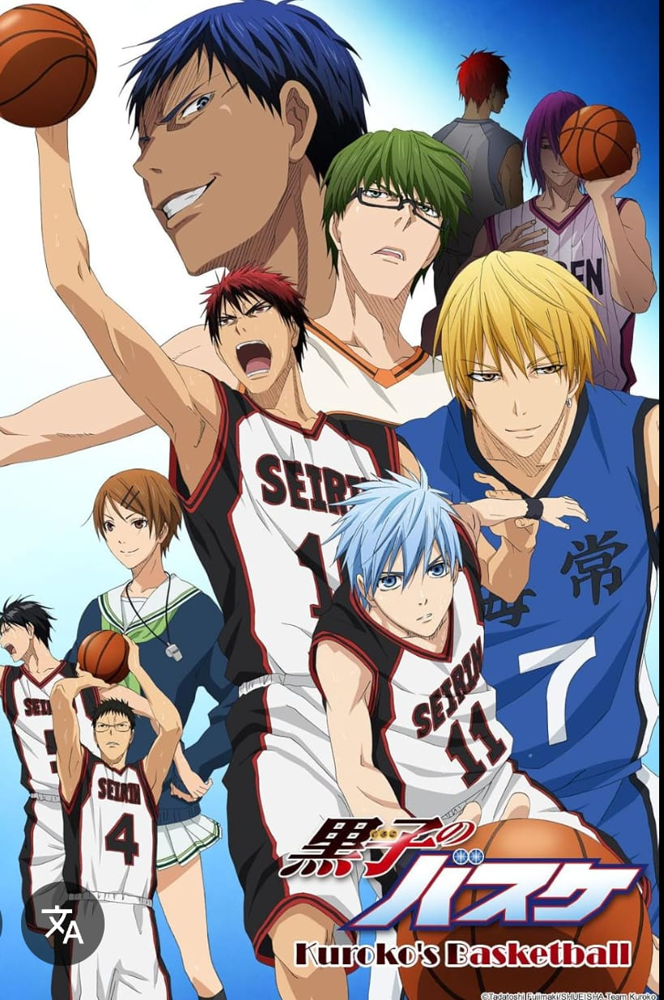

There are some popular anime you can watch:
Shonen: for teenage boys
Name: Naruto
Creator: Masashi Kishimoto
Synopsis: Follows Naruto Uzumaki, a youg ninja
ostracized by his village due to the nine
-Tailed Fox sealed within him. He aspires
to become Hokage, the village leader, seeking
recognition and forming bonds with his comrades.
Shojo: for teenage girls
Name: Fruits Basket
Creator: Natsuki Takaya
Synopsis: Follows Tohru Honda, an orphaned high schoolgirl
who becomes involved
with Sohma family, cursed to transform
into animals of the Chinese
zodiac when hugged by the opposite sex
, uncovering deep family secrets and personal healing.
Seinen: for adult men

Name: Tokyo Ghoul
Creator: Sui Ishida
Synopsis: Centers on Ken Kaneki, a college student who
becomes a half-ghoul
after a deadly encounter, navigating a world
where ghouls and humans
coexist in tension, exploring themes of
identity and survival.
Josei: for adult women
Name: Nana
Creator: Ai Yazawa
Snopsis: Explores the intertwined lives of two women named -one a punk rock vocalist, the other seeking love-as they navigate relationships, careers, and personal growth in Tokyo.
Isekai: different world
Name: Sword Art Online
Creator: Reki Kawahara
Synopsis: Centers on players trapped in virtual reality MMORPGs, particulary Kirito, who must navigate these digital worlds to survive, exploring the boundaries between reality and virtuality.
Mecha: robots
Name: Darling in the Franxx
Creators: Atsushi Nishigori, Naotaka Hayashi
Synopsis: Set in dystopian future, children known as "parasites" pilot giant robots called Franxx to protect humanity form monsters, exploring themes of identity, love, and rebellion
Slice of life
Name: Hyouka
Creator: Honobu Yonezawa
Synopsis: Centers on Houtaru Oreki, a high school student who joins the classic Literature Club and, alongside his curious peers, solves various mysteries, emphasizing the beauty in everyday life..
Sports
Name: Kuroko's Basketball
Creator: Tadatoshi Fujimaki
Synopsis: Centers on tetsuya kuroko, a seemingly invisible basketball player, and Taiga Kagami, as they aim to lead their high school team to victory against formidable opponents, emphasizing teamwork and perseverance.
Violet Evergarden
Oshi no Ko
Apothecary Diaries
Raeliana
Kuroko no Basket
Fruit-basket